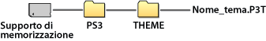

Impostazioni > Impostazioni dei temi
Impostazioni dei temi
Consente di regolare le impostazioni per personalizzare lo schermo XMB™ per elementi quali lo sfondo o il set di caratteri per il testo a video.
Tema
È possibile regolare le impostazioni per personalizzare il design di elementi visualizzati sullo schermo XMB™ come le icone o lo sfondo. Il tema può essere modificato mediante uno dei seguenti metodi.
Selezionare un tema preinstallato
È possibile selezionare un tema preinstallato nel sistema PS3™.
Scaricare un tema nel sistema PS3™.
Quando si scarica un tema da  (PlayStation®Store) o mediante
(PlayStation®Store) o mediante  (Browser per Internet ), l'installazione nel sistema PS3™ inizia automaticamente al termine del download.
(Browser per Internet ), l'installazione nel sistema PS3™ inizia automaticamente al termine del download.
Installare un tema mediante un disco di gioco o un software di video Blu-ray Disc disponibile in commercio (BD-ROM)
Per installare e utilizzare un file di tema contenuto in un disco, selezionare l'icona  sotto
sotto  (Gioco), quindi selezionare il file di tema che si desidera installare. Il tema verrà utilizzato automaticamente come tema predefinito al termine dell'installazione.
(Gioco), quindi selezionare il file di tema che si desidera installare. Il tema verrà utilizzato automaticamente come tema predefinito al termine dell'installazione.
Creare o scaricare un tema su un PC
Quando un tema viene creato utilizzando un PC o viene scaricato da un sito Web, creare una cartella denominata [PS3] - [THEME] sul supporto di memorizzazione e salvare il tema al suo interno. I file di tema devono essere salvati con estensione [.P3T].

Per installare il tema nella memoria di sistema del sistema PS3™, collegarvi il supporto di memorizzazione contenente il file di tema, quindi selezionare  (Impostazioni) >
(Impostazioni) >  (Impostazioni dei temi) > [Tema] > [Installa].
(Impostazioni dei temi) > [Tema] > [Installa].
Note
- Un'icona che non è parte del file tema sarà sostituita con un'altra icona nel file tema o rimarrà l'icona predefinita della schermata XMB™.
- Se un tema contiene più sfondi, lo sfondo del tema cambierà in modo casuale.
- È disponibile un software per PC che consente di creare file di tema personali da utilizzare sul sistema PS3™. È necessario anche un software disponibile in commercio per la creazione di elementi grafici. Per ulteriori informazioni, visitare il sito Web SIE della propria regione.
- Con alcuni modelli del sistema PS3™, per utilizzare i supporti di memorizzazione è necessario disporre di un adattatore USB (non in dotazione).
Eliminazione dei temi
Selezionare il tema che si desidera eliminare, quindi premere il tasto  e selezionare [Elimina].
e selezionare [Elimina].
Colore
Impostare il colore dello sfondo sullo schermo XMB™.
| Originale | Impostare sul colore originale / colore originale dello sfondo. |
|---|---|
| (colore / campione di colore) | Consente di impostare il colore selezionato come colore / colore dello sfondo. |
Sfondo
Impostare lo sfondo utilizzato nel tema o nell'immagine selezionata come sfondo in  (Foto) come sfondo dello schermo XMB™.
(Foto) come sfondo dello schermo XMB™.
| Luminosità | Modificare la luminosità dello sfondo. |
|---|---|
| Originale | Impostare sul tema originale. |
| Classico | Impostare sul tema [Classico]. |
| (nome del tema) | Consente di utilizzare lo sfondo per il tema impostato in [Tema]. |
| Sfondo | Impostare l'immagine selezionata come sfondo in (Foto) per lo sfondo. |
Set di caratteri
Consente di impostare il tipo di caratteri da utilizzare nella schermata XMB™ o nei messaggi in  (Amici). Quando la lingua del sistema è impostata su coreano, cinese semplificato o cinese tradizionale, questa impostazione non può essere selezionata.
(Amici). Quando la lingua del sistema è impostata su coreano, cinese semplificato o cinese tradizionale, questa impostazione non può essere selezionata.
Nota
I caratteri selezionabili variano a seconda della lingua del sistema in uso.